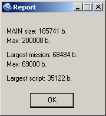
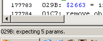
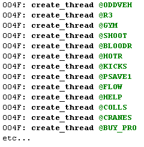
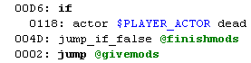
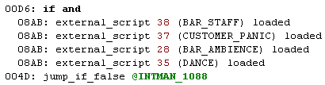
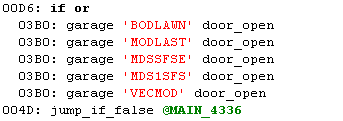
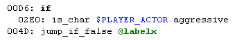
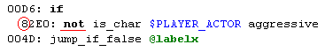
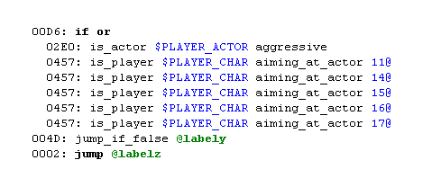

Introducción:
Hola, desde hace tiempo quise hacer un tutorial para novatos, este tutorial no te dira que hacer, te ayudara a hacer lo que quieras hacer. Tambien es un buen tutorial para Sanny Builder. Intente hacer un tutorial para todo el mundo incluso si no sabes nada de programacion. Tal vez quieras saltarte directamente a la parte II, si crees que sabes lo suficiente sobre el coding.
Con el “mission coding” (codificacion de misiones), tambien conocido
como “mision scripting”, podras hacer tus propias misiones, tus propios
mods o modificar los ya existentes (Aqui puedes encontrar muchos: Mission
Mods. Y aqui: Mission Coding (y es donde podras preguntar cosas sobre el
coding).
El mission coding se realiza con los archivos main.scm y
script.img que se encuentran en la carpeta data\script de San Andreas.
main.scm es un archivo compilado, es decir que esta hecho en un lenguaje que
la computadora puede entender facilmente. Si abres main.scm con un editor
hexadecimal, por dentro se veria algo como esto:
D6 00 04 00 19 01 02 45 0E 4D 00 01 FE 3D 87 02 A6 00 02 45 0E
Por eso tienes que descompilarlo para que este en un formato legible para el ser humano, luego ya podremos programar en el. No necesitas hacer nada en el archivo script.img, pero el archivo es necesario, por eso cada main.scm necesita su propio script.img.
Para descompilar main.scm necesitas Sanny Builder. Hay otros descompiladores, pero si recien estas empezando, Sanny es la mejor opcion en el coding. Porque esta continuamente actualizandose, tiene un soporte adecuado, es rapido, es colorido :cyclops: !!!!! Y porque este tutorial esta hecho con y para Sanny Builder.
Sanny Builder se parece mucho al San Andreas Mission Builder de Barton Waterduck, pero la sintaxis es diferente, por eso yo recomiendo encarecidamente usar Sanny Builder, aunque si me quieres desobedecer, aqui esta: Barton Waterduck’s San Andreas Mission Builder – Craig’s version, Gracias Craig.
Una cosa muy importante; para conseguir informacion, el “Sanny Builder’s Help” esta lleno de informacion bastante util y siempre esta disponible (incluso offline).
Ahora abre el ejecutable y sigue el tipico proceso de instalacion. Luego ve primero a “Herramientas\Opciones” (o presiona F10). Y en la pestaña “general”, verifica que esten activas estas opciones: "Mostrar Progreso", "Mostrar Reporte", "Mostrar Alerta", "Cargar juego rapidamente", "Chequeo de condiciones", "Chequeo de rangos", "Escribir Opcodes", tal vez "Reemplazar numeros de misiones", "Insertar nombre original de mision" y "Añadir informacion extra al SCM". Explicare mas tarde por que necesitamos tener activadas esas opciones.
Cierra Sanny Builder y vuelvelo a abrir.
1.- Arquitectura del main.scm:
Bien, ahora copia el main.scm original y el script.img a una nueva carpeta apto para el coding(o el lugar que quieras: el escritorio, la papelera de reciclaje, los documentos de tu mama …) que has creado y abrelo (haz copias de seguridad!!!!!! Como por ejemplo copiar en una carpeta nueva el main.scm original y el script.img) haciendo clic en Abrir y seleccionando el archivo SCM (*.scm). Puedes ver como se llena la barra del progreso(esto es porque hemos activado la opcion “Mostrar progreso”)
- Define Section:
Y ahora tendras algo como esto:
// This file was decompiled using sascm.ini published by Seemann (http://sannybuilder.com/files/SASCM.rar) on 13.10.2007
DEFINE OBJECTS 389
DEFINE OBJECT SANNY BUILDER 3.03
DEFINE OBJECT INFO // Object number -1
DEFINE OBJECT KEYCARD // Object number -2
DEFINE OBJECT AD_FLATDOOR // Object number -3
DEFINE OBJECT KB_BANDIT_U // Object number -4
etc...
Como puedes ver, esto determina los objetos que seran usados en el main.scm, son 389 en total, como dice en la parte superior (DEFINE OBJECTS 389 )
Para añadir un objeto, simplemente ve al ultimo y añade el tuyo.
Mas abajo (mucho mas abajo) puedes encontrar esto:
DEFINE MISSIONS 135
DEFINE MISSION 0 AT @INITIAL
DEFINE MISSION 1 AT @INITIL2
DEFINE MISSION 2 AT @INTRO
DEFINE MISSION 3 AT @NONE
etc...
Esto determina las misiones, y como dice en la parte superior, son 135 (DEFINE MISSIONS 135). Si usas Xbox, PlayStation 2 o el mod jarjar 2-player veras que hay mas misiones que son para 2 jugadores, pero esa es otra historia…
DEFINE EXTERNAL_SCRIPTS 78 // Use -1 in order not to compile AAA script
DEFINE SCRIPT PLAYER_PARACHUTE AT @PLCHUTE // 0
DEFINE SCRIPT PARACHUTE AT @PARACH // 1
DEFINE SCRIPT BCESAR2 AT @BCESAR2 // 2
DEFINE SCRIPT BCESAR3 AT @COKEC // 3
DEFINE SCRIPT SLOT_MACHINE AT @BANDIT // 4
etc...
Esto determina scripts externos, que son scripts (programas) que se activan cuando se necesitan; hay 78 de ellos, como dice en la parte superior. Esto es lo que se encarga del paracaidas (player -PLAYER_PARACHUTE- y non-players -PARACHUTE-), los juegos en el Casino (ROULETTE, VIDPOK -Video Poker-, BLACKJ -Black Jack-, WHEELO –Rueda de la fortuna-, etc...), Tiendas (AMMU, TATTOO, BARBER, JUNKFUD, CARMOD), y muchas otras cosas que son mas o menos extrañas (DEBT, STRIPW, GF_SEX, HOME_BRAINS ...). Mas adelante veremos mas sobre esto.
Luego tienes estas 2 lineas:
DEFINE UNKNOWN_EMPTY_SEGMENT 0
DEFINE UNKNOWN_THREADS_MEMORY 574
Que son desconocidos y no nos sirven ni a ti ni a mi.
- Main section: (seccion principal)
Ahora debes ver algo como esto:
{$VERSION 3.1.0027}
//-------------MAIN---------------
03A4: name_thread 'MAIN'
016A: fade 0 time 0
042C: set_total_missions_to 147
030D: set_max_progress 187
0997: set_total_respect_points_to 1339
01F0: set_max_wanted_level_to 6
0111: set_wasted_busted_check_to 0
00C0: set_current_time_hours_to 8 current_time_minutes_to 0
04E4: unknown_refresh_game_renderer_at 2488.562 -1666.864
03CB: set_rendering_origin_at 2488.562 -1666.864 13.3757
062A: change_stat 165 to 800.0 //floating-point values
062A: change_stat 23 to 50.0 //floating-point values
062A: change_stat 21 to 200.0 //floating-point values
062A: change_stat 160 to 0.0 //floating-point values
0629: change_stat 181 to 4 //integer values
0629: change_stat 68 to 0 //integer values
0053: $PLAYER_CHAR = create_player #NULL at 2488.562 -1666.864 12.8757
etc...
Mucho mas adelante (usa la herramienta “buscar” del Sanny Builder y busca: “mission 0”) :
//-------------Mission 0---------------
// Originally: Initial 1
:INITIAL
03A4: name_thread 'INITIAL'
06C8: enable_riot 0
0004: $1515 = 0
0005: $1500 = 5.0
etc...
A esto se le llama la main part (parte principal) o la main section (seccion principal) (y a veces imprecisamente llamado el main thread). Aqui hay muchos scripts pequeños que, por ejemplo: crean el circulo rojo al empezar las misiones, lo que se encarga de los telefonos celulares (CELLFON y otros mas), lo que se encarga de las novias; aqui es donde todo se activa (empieza), donde muchos mods son añadidos, y es donde vas a empezar a codificar. La seccion principal esta compuesta de un monton de threads pequeños, pero empieza con el main thread. Y este thread es (y es el unico) creado por el mismo motor, con este no necesitas usar el opcode para crear threads (004F: create_thread ) para iniciarlo. No te preocupes, mas adelante hay una parte enteramente dedicada a los threads.
En la main part solo puedes usar variables locales (0@ , 1@, 2@, etc...) hasta el 31@ incluido. 32@ y 33@ son temporizadores locales internos (cuentan el tiempo que ha pasado, veremos esto mas adelante) que tambien puedes usar. Pero en la main part no funcionara mas de 33@ . Esto a Sanny no le contentara y te dira que el var. local esta fuera de rango (esto es porque hemos activado la opcion “Chequeo de rangos”). Puedes usar cualquier global que quieras, pero sus numeros estan limitados a 16383, pero deberia ser suficiente.
- Mission Section: (la seccion de misiones)
A continuacion:
//-------------Mission 0---------------
// Originally: Initial 1
:INITIAL
03A4: name_thread 'INITIAL'
06C8: enable_riot 0
0004: $1515 = 0
0005: $1500 = 5.0
etc...
Es la primera mision (que en realidad no es una mision porque ocurre durante los primeros milisegundos de un nuevo juego, antes de la primera cinematica y no te da ningun punto). Esta mision en realidad crea los carros estacionados, algunas armas para recoger y otras cosas.
Despues tenemos la mision 1 (busca: “mission 1”)
//-------------Mission 1---------------
// Originally: Initial 2
:INITIL2
03A4: name_thread 'INITIL2'
0004: $3407 = 25
0004: $3408 = 100
0004: $3409 = 250
etc...
Como la mision 0, esta tampoco es una mision; solo establece valores numericos sobre algunas variables, crea otros carros estacionados, activa algunas puertas y lifts.
Luego, la mision 2
//-------------Mission 2---------------
// Originally: Intro
:INTRO
03A4: name_thread 'INTRO'
0050: gosub @INTRO_47
00D6: if
0112: wasted_or_busted //mission only
004D: jump_if_false @INTRO_38
0050: gosub @INTRO_9715
etc...
Esto es parte de la cinematica de introduccion y la mision finaliza cuando llegas al circulo rojo en la casa de CJ (Johnson House en Ganton).
Despues estan los juegos arcade (originally: Video game: They crawled from uranus; originally: Video game: Duality; originally: Video game: Go Go Space Monkey; originally: Video game: Let's get ready to BUMBLE; originally: Video game: poker), luego estan otras cosas como el billar (originally: pool), el juego del baile (originally: Lowrider (apuesta y baila)) y la mision secreta/oculta de Zero (originally: Beefy Baron). Despues de todas esas, sigue la mision “Big Smoke” (Mission 11), que es la primera mision del juego.
Y luego asi hasta el final de la mision 134. Si quieres agregar una mision, agregala despues de esta y determinala en la seccion “define mission” (ya mas adelante veremos).
- External script section: (ultima seccion)
Despues de la ultima mision veras todos los scripts externos determinados, empezando con el primero (PLAYER_PARACHUTE):
//-------------External script 0 (PLAYER_PARACHUTE)---------------
:PLCHUTE
03A4: name_thread 'PLCHUTE'
0247: request_model #GUN_PARA
:PLCHUTE_16
etc...
Y luego
//-------------External script 1 (PARACHUTE)---------------
:PARACH
03A4: name_thread 'PARACH'
0004: $8275 = 0
etc...
Y asi sucesivamente hasta el script externo numero 77. En muchas partes del script externo, al mirar el nombre del script podras deducir para que sirve.
Lo mas importante ahora es el main part.
Pero continuando con la arquitectura del main.scm. Debes saber que el main.scm tiene sus limitaciones, mira aqui. Como puedes observar, el tamaño principal (la extension de todos los threads de la “main part”) esta limitado a 200 000 bytes. Al compilar veras que aparece un reporte que te dice cuan extenso esta la “main part”: "MAIN size : XXXXXX b."; y luego que mision es la mas grande: “Largest Mission : XXXX b."; y el script externo mas extenso: "Largest Script: XXXX b."

Esto pasa porque hemos activado la opcion “Mostrar reporte”.
2.- Stripped scm y Opcodes:
A. Stripped scm :
Para tus primeros proyectos necesitaras un main.scm que sea pequeño (el original es enorme) y que no tenga cosas innecesarias para el “scripting”. Porque asi ganas tiempo al compilar y no tendras que esperar la primera cinematica. Y tambien por los limites del scm, ver mas arriba.
Bien, un stripped scm es un main.scm que no contiene ninguna mision, ningun script externo, ni los threads de la main.scm. No contiene casi nada, solamente crea al jugador.
Puedes encontrar uno en la carpeta “\data\sa” donde has instalado Sanny Builder, bajo el nombre “stripped.txt”. Se ve raro porque esta escrito en las clases sintacticas de Sanny Builder, no te contare mucho sobre ello, mira mas en Sanny Builder's Help. No es porque no sea bueno, sino porque creo que sera mas facil aprender por primera vez con el “metodo opcode”.
Deberias tener algo como esto:
{
use macro (Ctrl+J) "headsa"
to insert a file header
}
{$VERSION 3.0.0000}
var
$PLAYER_CHAR: Player
end // var
03A4: name_thread 'MAIN'
01F0: set_max_wanted_level_to 6
0111: toggle_wasted_busted_check 0
00C0: set_current_time_hours_to 8 minutes_to 0
04E4: unknown_refresh_game_renderer_at 2488.56 -1666.84
03CB: set_rendering_origin_at 2488.56 -1666.84 13.38
0053: $PLAYER_CHAR = create_player #NULL at 2488.56 -1666.84 13.38
01F5: $PLAYER_ACTOR = create_player_actor $PLAYER_CHAR
07AF: $PLAYER_GROUP = player $PLAYER_CHAR group
0373: set_camera_directly_behind_player
01B6: set_weather 0
0001: wait 0 ms
087B: set_player $PLAYER_CHAR clothes_texture "PLAYER_FACE" model "HEAD" body_part 1
087B: set_player $PLAYER_CHAR clothes_texture "JEANSDENIM" model "JEANS" body_part 2
087B: set_player $PLAYER_CHAR clothes_texture "SNEAKERBINCBLK" model "SNEAKER" body_part 3
087B: set_player $PLAYER_CHAR clothes_texture "VEST" model "VEST" body_part 0
070D: rebuild_player $PLAYER_CHAR
01B4: toggle_player $PLAYER_CHAR can_move 1
016A: fade 1 time 0
04BB: select_interior 0
0629: change_integer_stat 181 to 4
016C: restart_if_wasted_at 2027.77 -1420.52 15.99 angle 137.0 town_number 0
016D: restart_if_busted_at 1550.68 -1675.49 14.51 angle 90.0 town_number 0
0180: set_on_mission_flag_to $ONMISSION // Note: your missions have to use the variable defined here
0004: $DEFAULT_WAIT_TIME = 250
03E6: remove_text_box
// put your create_thread commands here
:MAIN_LOOP
0001: wait $DEFAULT_WAIT_TIME ms
00BF: $TIME_HOURS = current_time_hours, $TIME_MINS = current_time_minutes
0002: jump @MAIN_LOOP
// put your mods (threads) here
//-------------Mission 0---------------
// put your missions here
//-------------External script 0---------------
// put your external scripts here
Tal vez notaste que no hay una “define section” (DEFINE OBJECTS, DEFINE MISSIONS…) No tienes de que preocuparte porque aqui no hay nada que necesite ser determinado. Como dice en el archivo, si necesitas un header (define section) presiona CTRL + J y selecciona headsa.
Luego aparecera lo que te faltaba:
DEFINE MISSIONS 0
//DEFINE MISSION {ID} 0 AT {LABEL} @
DEFINE EXTERNAL_SCRIPTS 0 // Use -1 in order not to compile AAA script
//DEFINE SCRIPT {NAME} AT {LABEL} @
DEFINE UNKNOWN_EMPTY_SEGMENT 0
DEFINE UNKNOWN_THREADS_MEMORY 0
Ahora podras determinar tus misiones y scripts externos.
Para colocar mods en tu stripped scm necesitas escribir el comando para crear threads (como 004F: create_thread @MYTHREAD) en donde dice: @// put your create_thread commands here. Y los scripts los pones despues del @MAIN_LOOP, en donde dice: // put your mods (threads) here.
B. Opcodes:
En Sanny Builder, muchas lineas empiezan con un numero de cuatro digitos seguido de dos puntos; como por ejemplo 0001:, 087B:, 016A:, o 004E:, o como 0605: en Sanny Builder. Estos son los Opcodes!!!!!!! Y podemos verlos porque hemos activado la opcion: “Escribir Opcodes”.
El Opcode es el numero del comando (accion u operacion) que el motor del juego ejecutara con los parametros dados. Todos los opcodes (exceptuando unos cuantos) poseen una cantidad de parametros fija.
Los parametros (tambien llamados params, P1, P2, o %p) son la entrada (numeros, actores, vehiculos, cadenas de texto, y cualquier otro tipo de variable) del comando. En la esquina inferior izquierda, Sanny builder te muestra cuantos parametros necesita un opcode.

Aqui hay dos ejemplos:
000A: 3@ += 1 // integer values
-
000A: Es el opcode que hace que la operacion sume los enteros.
-
3@ y 1: Son los parametros, este opcode tiene 2 parametros.
Entonces, esto agarra el local variable 3@ (ya veremos mas sobre esto) y le añade un uno. Si 3@ era igual a 1 entonces ahora sera igual a 2!!!!
uno mas complejo:
0605: actor $PLAYER_ACTOR perform_animation_sequence "ATM" from_file "PED" 4.0 loop 0 0 0 0 6000 ms
-
0605: El opcode del comando.
-
$PLAYER_ACTOR, "ATM", "PED", 4.0 , 0 , 0 , 0 , 0 , 6000 : son los parametros, este opcode tiene 9 parametros.
Este comando hace que el actor existente (un personaje) $PLAYER_ACTOR efectue la animacion "ATM"”, que esta en el archivo de animacion "PED". 4.0 es el ratio de reproduccion de la animacion, “loop 0” significa que una vez finalizada la animacion, no se volvera a repetir; si se coloca 1 el actor lo hara la animacion una y otra vez (loop) hasta que algo le diga otra cosa (o que se destruya, o se “libere” –cambiandolo con otros ped que veas en el juego, opcode 01C2). Luego hay otros parametros de los que te hablare mas adelante. El ultimo es el tiempo que durara la animacion ejecutada por el motor. Actuara como una espera y hara que el motor pare de ejecutar el codigo hasta que acabe ese tiempo.
Ahora encuentra el opcode que necesitas, hay muchas opciones:
-
El brillante “Buscador de Opcode” de Sanny Builder. En el menu de herramientas, herramientas IDE, buscar Opcode. Simplemente escribe lo que estas buscando y tendras la oportunidad de encontrarlo. Hay una seccion especial en el Sanny Builder’s Help en Opcode Search Tool (en ingles). Te dice las teclas para copiar opcodes (seleccionas al opcode y aprientas Intro), para ordenar opcodes, etc… Esto utiliza el opcodes.txt que es creado por Sanny y que tienes que volver a crearlo si has cambiado el sacm.ini.
-
El main.scm original descompilado (el mas confiable la mayoria de veces - una muy buena explicacion y si lo usas FUNCIONA -) Gracias R* por hacer el juego!!!!!!! Gracias Barton Waterduck, autores de Sanny Builder y muchos otros que ayudaron a descompilar el scm, deberian reconocerse ellos mismos (si es que tienen tiempo de leer esto).
-
GTA: SA Opcodes @GTAforums es el lugar para opcodes y es muy bueno porque tiene buena descripcion, explicacion, y que hace el valor de un parametro.
Pero lo ideal es husmear en todos ellos!!!!
Las descripciones de los opcodes vienen en un archivo llamado sascm.ini que esta localizado en data\sa de la carpeta de instalacion de Sanny Builder. Modificando este archivo hara nuevas descripciones y/o cambiara los parametros de los opcode.
-
El original sascm.ini es muy bueno. Aviso que es mejor no tocarlo si recien empiezas.
-
Hay bases de datos de opcodes unificados en PLPynton aqui . Si no quieres usar el archivo puedes seguir buscando en el tema. Archivo : aqui
Esta “base de datos“ de opcode tiene dos grandes ventajas, porque que es muy completo y mantiene los parametros originales en orden; y una desventaja, que es que usa una sintaxis completamente distinta en las descripciones. Gracias a PLPynton por crearla. NOTA del traductor: El enlace no funciona.
-
Spaceeinstein's sascm.ini aqui. Usa la sintaxis de siempre. Las gracias para el. NOTA: tampoco funciona este.
¡¡¡¡¡¡¡ IMPORTANTE !!!!!!!
Sobre el sascm.ini, no te lies mucho con eso. Elige uno y quedatelo por un tiempo. Cada vez que lo cambies, tendras que convertir todos tus archivos, o compilar y descompilar, pero tienes que tener cuidado con los parametros de los opcode, a veces se estropearan al cambiar el sascm.ini y tendras crashes y bugs (y seran muy dificiles de encontrar).
Tambien tendras que volver a crear tus archivos opcode.txt , de lo contrario el autocompletado con F1 o el buscador de Opcodes no funcionaran. Para hacer esto ve a herramientas y “Make opcode.txt”. Mi consejo es elegir uno de ellos o quedarse con el que te da Sanny Builder, y no cambiarlo hasta que tengas una buena razon para hacerlo. El tutorial esta basado en el sascm.ini que te da Sanny Builder.
3.- Parametros y variables:
Aca estan los diferentes tipos de parametros:
-
Integer (numero entero) o int. Es representado por los numeros 1, -2 o 321 o cualquier otro.
-
Los Floats o floating point values. Cualquier numero decimal como 1.2 o -2372.3845.
-
Un actor como CJ (Tu) esta almacenado en la global variable (variable global) $PLAYER_ACTOR, o Ryder que esta en $SA_RYDER, o el soldado que vigila la puerta de la base del ejercito en la mision de Ryder que esta almacenado en la local variable (variable local) @102. La variable es almacenada en la memoria y sirve para nombrar un actor, un auto, un objeto, etc.
-
Un "car” (carro) (en el coding cualquier vehiculo - aereos, marinos, o terrestres - es considerado un carro), siempre el automovil que nosotros estamos manejando es $PLAYER_CAR, como los actores son guardados en las variables locales o globales, los cars o carros tambien son almacenados en una variable.
-
El identificador de modelo, como por ejemplo #CHEETAH, -#ARMY, #PARACHUTE, es el modelo 3D de un automovil, actor, u objeto. Estos hacen referencia a los archivos dff que estan almacenados en gta3.img. Es necesario cargar los modelos (poniendolos en la memoria) para crear automoviles, actores u objetos.
-
Las cadenas de texto cortas (8 bytes de longitud) como 'STRAP_4' o 'MTIME3' " son las palabras que el motor "lee" busca al pasar por el archivo - o la linea de un archivo - nombrado. Son siempre de 7 caracteres como maximo. Las mismas hacen referencia a los nombres de los archivos tales como gxt, archivos de animacion, archivos IPL (interiores de los garajes etc...) o nombres de threads, entradas de texto (del archivo gxt), las animaciones (la animacion que se encuentra en el archivo animation), y muchas otras cosas. No te lies mucho, es solo un formato para el parametro.
-
Cadena de texto larga (16 bytes o mas) como 'ATM' o 'JEANSDENIM'. Esto es exactamente igual que lo de arriba, es solo un formato para el parametro. Pero este puede manejar palabras mas largas (el ReadMe de Sanny dice hasta 255 caracteres) e incluso se usa si la palabra es mas corta que 7 caracteres. Puedes encontrar mas informacion sobre las cadenas(ambas, cortas y largas, en el mensaje de Seemann).
-
Labels, ejemplo: MAIN_4059. Son usadas solo en jumps (y gosubs) porque esos opcodes (0002: jump @ ; 004D: jump_if_false @ ;0050: gosub @; or 004F: create_thread @) hacen que el motor salte hasta la label que se indique. La label es representada al principio por un “:”.
Ejemplo:
:label
0001: wait 0 ms
0002: jump @label
Las variables son una pequeña pieza de la memoria donde vos podes almacenar cosas. Una vez que hayas definido en el motor que es lo que hay que recordar, esto permanecera asi salvo que sea cambiado o eliminado. Inclusive despues de salvar la variable seguira presente (salvadas las variables y recargadas cuando el juego esta cargando). Como cuando creas un actor y le asignas una variable, esta pasa a ser el nombre del actor. En ellos puedes poner cualquier integer, floats, actors, vehiculos, cadenas de texto (formato especial).
Existen 2 grandes familias de variables:
Then there is two big family of variables :
• Global variables: estan representadas en el comienzo con un $. Las Globals pueden ser usadas en cualquier parte del main.scm. Si quieres usarlas para algo en la main part en misiones, tambien es accesible y equivalente a lo anterior. Ejemplos $ONMISSION, $PLAYER_ACTOR.
• Local variables : representadas por un @ al final. Ej: 1@, 2@. Cada thread (creado por 004F) tiene su propio conjunto de locals, como 0@ en :thread_A pero no es igual 0@ en :thread_B. En la main part no puedes usar valores que superen los 33@ (los demas son los cronometros locales, despues daremos mas detalles). Pero en una mision se puede usar hasta 1024@.
Local timers (cronometros locales): 32@ y 33@, son los cronometros locales internos. Estos cuentan los milisegundos que van pasando. Si lo pones en 0 , esperas 10 segundos y veras que 32@ o 33@ cambian a 10 000. Si pones 1 000 y esperas 5 segundos veras que sera equivalente a 6 000 ms.
Cortas y largas cadenas de texto: las cadenas de texto son almacenadas en las variables de formato especial. Las cadenas de texto estan escritas en color rojo en sanny. Existe 4 variables de texto, 2 para cortos (8 bytes, 'STRING'), 2 para cadenas largas de texto (16 bytes, "LONGSTRING") :
Para las cadenas cortas de texto:
- Cadena de texto global como: s$1169 o s$ACTOR_SPEECH_GXT_REFERENCE son siempre accesibles como otras globals
- Cadena de texto local como: 170@s o 5@s son solo accesibles en el thread.
Para cadenas largas:
-Cadena de texto global: v$1225 o v$MYLONGSTRING, lo mismo para las cadenas largas como en las cortas
.
- Cadena de texto largo local: 28@v, lo mismo en las cortas…
Pero miremos afuera, por ejemplo 0@s remplaza a 0@ sigue existiendo y viceversa, es la misma variable solo que se encuentra en diferente formato.
Pero tienes que recordar que el integer y float son diferentes para el motor del juego (1 no es igual que 1.0!!!!). Si el opcode necesita un float y vos le das un integer (y viceversa) el juego no va arrancar. Vos podes convertir un integer en un float con el opcode 008D. Y convertir un float en un integer con el opcode 008C.
4.- Threads y Labels:
Un thread es una pieza "autonoma" (algo que no necesita nada para funcionar mas que el mismo) del codigo. Se parece a un programa (como una ventana abierta en un sistema operativo -como Microsoft Windows-). Para usarlo (hacerlo funcionar en el juego) con tus futuros mods (programas de Windows) necesitas crear uno nuevo. Eso se realiza con 004F.
CODE
004F: create_thread @MYTHREAD
Los threads son como el fuego en un mundo de cerillas (o encendedor, fosforo…).No puedes “hacer” fuego, necesitas prenderlo de otro fuego – como con la llama olimpica que nunca se apaga entre 2 juegos olimpicos)
Debes crear uno nuevo de otro ya existente. Como dije antes, el main thread es creado por el mismo motor. El “MAIN” thread entonces sera la cerilla que encendera tu siguiente fuego. Entonces, si es el unico thread existente (como en un stripped main.scm) necesitaras crear tu thread en el main thread ANTES de que esta ultima se apague por (antes de esta linea) :
CODE
004E: end_thread
Si estas usando un archivo grande (como el main.scm original) tienes que crear los thread en donde esten los otros.
create_thread (004F), de esta forma:

No te preocupes por "00D7: create_thread_with_wasted_busted_check ", porque se desconoce su verdadero uso. Usa 004F, es la mejor opcion para verificar si el jugador esta muerto o ha sido atrapado por la policia (como el opcode condicional 0112). Seeman dijo en el topic los 004F threads creados con 0 a 32 parametros extras y los 00D7 threads creados con 0 parametros extras. Pero no te preocupes por 00D9 porque 004F es igual y tiene mas funciones. MENSAJE DE SEEMAN (http://www.gtaforums.com/index.php?showtopic=261006&st=0&#entry3937655)
Como dije antes, cada thread que crees tendra un conjunto de local variables (variable local) desde 0@ a 33@ (teniendo en cuenta que 32@ y 33@ son los cronometros locales). Son muy utiles porque no ocupan memoria.
Las labels son pequeñas piezas de los threads, como:MAIN_4059. Ahora imagina un thread como si fuera un libro (no mas fuego D:); las labels serian las paginas que lo integran. De esta forma se puede entender que un JUMP (o jump_if_false o gosub) a una label especifica seria como saltar a una pagina especifica.
Aca dejo un ejemplo animado para que puedas ver como el motor del juego viaja a traves de las labels:

La linea roja representa el codigo (a veces al motor del juego se le llama simplemente codigo, en el sentido de “el lector del codigo”) pasando a traves las labels.
Como puedes ver el thread “label”es creado por otro thread. Puede ver el codigo "separando" en dos, uno va a crear el thread label y el otro sigue haciendo el thread que usamos, y luego se acaba (pero se podrian seguir haciendo mas cosas sin acabarlo).
Pasa a traves de :label a :label_100 en :label_100 podras ver que hay un “if” que es una condicion, seguida de jump_if_false, esto significa que $PLAYER_ACTOR esta cerca de la posicion 2498.0 -1711.0 1015.0 el codigo pasa por esto y realiza un jump a :label_200.
El codigo realiza un loop, que se repite infinitamente hasta que se cumpla la condicion especificada.
Luego salta a :label_200 sin pasar por :label_150. Lo que tienes que hacer en:label_200 es poner las cordenadas 3D de $PLAYER_ACTOR en las variables $X_COORD $Y_COORD $Z_COORD. Luego salta a :label_150, espera 1 minuto y vuelve a saltar a :label_100 y chequea devuelta si el jugador esta en la posicion especificada. Y eso se repetira una y otra vez. No tienes que terminar un thread si no es necesario, puede llevar un control a algo antes de empezar. Recuerda que siempre tienes que hacer algo con un hilo, terminarlo o dejar que siga funcionando. Pero nunca dejarlo libre.
Acuerdate de tener en cuenta el tiempo de espera (0001: wait 0 ms), porque es obligatorio. Cuando a un loop le agregues un tiempo y el motor no lo reconozca bien, el juego no se cerrara si no que se congelara.
La unica manera de resolver esto es cambiando la resolucion, aunque aveces en
Si no estas seguro de agregar una espera o no solo tienes que poner "wait 0 ms" porque no se nota la diferencia. Son 500 ms.
5.- “If” y opcodes condicionales:
Se llama “if” a una estructura del codigo que comprueba si hay algo que se esta cumpliendo.
En sanny se ve algo asi:

El motor se desplazara solamente si se comprueba una cierta condicion, y saltara a otra label. En caso de que no se compruebe se usa (004D: jump_if_false @). La cosa, que podia o no hacerse, lleva una condicion que utiliza codigos de operacion condicionales. Y se pueden poner hasta 7 condiciones. Ya se que estas diciendo “soy feliz, esto cambia mi vida”, pero…
Existen 2 tipos multiples de condiciones “if”:
Cuando tienes varias condiciones es posible que quieras que todas sean verdaderas (quizas) o que solo 1 sea verdadera.
-If and: Se usa cuando se quiere que todas las condiciones sean verdaderas, ejemplo:

Ahi se puede ver que todos esos external scripts son cargados, pero si llegara a pasar que alguno de ellos no se cargo entra en accion el jump_if_ false y salta a la label @INTMAN_1088. Puedes utilizar esto para comprobar que todo sea verdadero y si algo es falso se efectua el jump a la label determinada.
-If or: se utiliza cuando se necesita que solo 1 condicion sea verdadera para continuar con el viaje:

Si ahi hay solo 1 que no cumple, la puerta estara abierta para continuar el viaje. En el caso contrario entra en accion el jump_if_false y saltara a la label @MAIN_4336.
Dando un ejemplo, es como pensar si esto, o esto, o esto es verdadero. Si no hay al menos 1 verdadero salto.
And y or se denominan operadores logicos.
Una observacion es que no se debe poner AND y OR en una condicion IF singular. Solo puedes usar 1 de los elementos. Si intentas usar los 2 sanny te avisara que no hagas eso.
Por otro lado no te olvides de poner un AND o un OR en tus condiciones if. Sanny no va avisar nada y el juego va arrancar igual, pero estoy seguro que no funcionara correctamente. Siempre recuerda poner un and o un or en tus condiciones if.
Tambien se pueden negar todos los opcodes condicionales. Negar es agregar un NOT en cada una de las condiciones. Como por ejemplo If actor not dead, o if actor not driving. De esta forma el motor pasara a traves de estas y si alguna no cumple efectuara el salto. En este caso solo se efectuara si alguna de ellos no cumple con el NOT, un ejemplo seria que pongas esto If actor not dead, si el actor esta muerto se efectuara el jump. De esta forma puedes negar multiples condiciones IF. Para negar todos los opcodes condicionales tienes que poner un 8 en el primer digito en lugar del 0, ejemplo:

Ahi no esta negado y usa 0.

Ahi esta negado y usa 8.
No es necesario escribir el “not”, sanny no lo mirara y escribira al re-descompilar. Pero puedes escribir el “not” si quieres, lo hace mas facil para trabajar. Pero SI TIENES que escribir el 8 en el opcode.
Si vos negas todas las condiciones en un “'multiple conditions if”, tendras que cambiar el operador logico:


Estos dos hacen lo mismo:
• El primero verifica es el jugador es agresivo or(o) si el obejtivo del actor 14@ or(o) el objetivo del actor 15@ or(o) el obejtivo del actor 16@ or(o) el objetivo del actor 17@, si alguno de estos son verdaderos el codigo pasa a traves de ellos y realiza el jump a labelz.
• El segundo veifica que el jugador no sea agresivo and(y) que no se cumpla el obejtivo del actor 14@ and(y) que no se cumpla el objetivo del actor 15@ and(y) que no se cumpla el objetivo del actor 16@ and(y) que no se cumpla en objetivo del actor 17@, si cualquiera de estos es falso (si el jugador cumple el objetivo) el codigo realiza un jump_if_false a labelz.
Algunas veces cuando mires los mods encontraras algo como esto:
CODE
00D6: if 0
o
CODE
00D6: if 5
o
CODE
00D6: if 21
o
CODE
00D6: if 25
No te preocupes porque es la misma compilacion, tienes que decopilar y obtendras el operador logico escrito. Y es por eso que se permite usar el “chequeo de condiciones” asi que podras usar AND y OR y sanny lo escribe cuando se decopila.
if 0 = if
if x = if and
if 2x = if or
Lee las condiciones de la Ayuda de Sanny Builder or/and
aqui (Es de Vice City, pero es lo mismo) para mas explicaciones.
Es posible que quieras hacer condiciones de alto nivel, y en las condiciones de ayuda de sanny builder se encuentra explicado muy bien. Realizar condiciones de bajo nivel esta bastante bien por ahora, de todas formas tambien se pueden realizar condiciones de alto nivel usando condiciones de bajo nivel.
Pero recuerda muy bien que cuando se usa “if” y sabes que el codigo va a realizar un loop, en donde se puede repetir infinitamente, tienes que agregar un WAIT. Es decir un tiempo de espera. Agregando un 0 de espera esta bien, porque no se nota la diferencia. Y en esos 0ms el motor hara otras cosas. Vuelve a mirar el ejemplo animado de las labels para entender en que momento hay que usar el wait.
6. Solicitar los modelos, cargarlos antes de crearlos, liberarlos para no ocupar memoria:
Cuando se crea un actor (con el opcode 009A), un vehiculo (con el opcode 00A5), un objeto (con opcode 0107), o le das armas a un actor, tendras primero que solicitar el modelo dff, cargarlo, y verificar si este se cargo realmente.
Ejemplo:
CODE
0001: wait 0 ms
0247: request_model #HFYBE
0247: request_model #POLICE_BARRIER
0247: request_model #BMYBOUN
0247: request_model #WMYBOUN
0247: request_model #DESERT_EAGLE
0247: request_model #MP5LNG
0247: request_model #CHEETAH
0247: request_model #TURISMO
038B: load_requested_models
00D6: if and
0248: model #HFYBE available
0248: model #BMYBOUN available
0248: model #WMYBOUN available
0248: model #DESERT_EAGLE available
0248: model #MP5LNG available
004D: jump_if_false @GSHAUTO_564
00D6: if and
0248: model #POLICE_BARRIER available
0248: model #CHEETAH available
0248: model #TURISMO available
004D: jump_if_false @GSHAUTO_564
009A: 11@ = create_actor 4 #WMYBOUN at 561.0 -1252.0 17.0
009A: 14@ = create_actor 4 #BMYBOUN at 552.0 -1257.0 17.0
009A: 15@ = create_actor 5 #HFYBE at 567.0 -1290.0 17.5
009A: 16@ = create_actor 4 #WMYBOUN at 561.0 -1255.0 17.0
009A: 17@ = create_actor 4 #BMYBOUN at 553.5 -1260.0 17.0
009A: 18@ = create_actor 4 #WMYBOUN at 569.0 -1292.0 17.5
009A: 19@ = create_actor 4 #BMYBOUN at 569.0 -1288.0 17.5
0107: 9@ = create_object #POLICE_BARRIER at 560.0 -1254.0 17.0
00A5: 0@ = create_car #TURISMO at 1793.4956 -1907.4233 12.3992
00A5: 1@ = create_car #CHEETAH at 1793.4956 -1907.4233 12.3992
01B2: give_actor 11@ weapon 29 ammo 900 // Load the weapon model before using this
01B2: give_actor 14@ weapon 29 ammo 900 // Load the weapon model before using this
01B2: give_actor 15@ weapon 24 ammo 300 // Load the weapon model before using this
01B2: give_actor 16@ weapon 29 ammo 900 // Load the weapon model before using this
01B2: give_actor 17@ weapon 29 ammo 900 // Load the weapon model before using this
01B2: give_actor 18@ weapon 29 ammo 900 // Load the weapon model before using this
01B2: give_actor 19@ weapon 29 ammo 900 // Load the weapon model before using this
Ahi puedes observar, como primero solicite los modelos (usando 0247: request_model), los cargue (con 038B: load_requested_models) y cheque que estuviera disponibles (con 0248). Si cualquiera de estos no es cargado, se efectua un jump y se vuelven a cargar. Si todos son cargados normalmente, se crea el actor, se le da el arma y se crea el objeto.
Vos podras ver en el comentario anterior que el 01B2 necesita el modelo del arma para cargarlo y luego usarlo. Para saber el numero de las armas puedes buscar en la ayuda de sanny builder, en la seccion de SCM documentation o si no en Generic SA SCM Documentaion (http://www.gtaforums.com/index.php?showtopic=205020&st=0&#entry3013775).
Una vez que hayas terminado de hacer lo que tiene que ver con esto (todos estan muertos, el jugador esta demasiado lejos, no los queremos aqui, etc ..) podrpas transformar estos en peatones (peds) y autos usuales (como todos los peds ya autos que se ven en el juego) o destruirlos (el objeto tendra que ser destruido).
CODE
0108: destroy_object 9@
01C3: remove_references_to_car 1@ // Like turning a car into any random car
01C3: remove_references_to_car 0@ // Like turning a car into any random car
01C2: remove_references_to_actor 11@ // Like turning an actor into a random pedestrian
01C2: remove_references_to_actor 14@ // Like turning an actor into a random pedestrian
01C2: remove_references_to_actor 15@ // Like turning an actor into a random pedestrian
01C2: remove_references_to_actor 16@ // Like turning an actor into a random pedestrian
01C2: remove_references_to_actor 17@ // Like turning an actor into a random pedestrian
01C2: remove_references_to_actor 18@ // Like turning an actor into a random pedestrian
01C2: remove_references_to_actor 19@ // Like turning an actor into a random pedestrian
o
CODE
0108: destroy_object 9@
00A6: destroy_car 0@
00A6: destroy_car 1@
009B: destroy_actor_instantly 11@
009B: destroy_actor_instantly 14@
009B: destroy_actor_instantly 15@
009B: destroy_actor_instantly 16@
009B: destroy_actor_instantly 17@
009B: destroy_actor_instantly 18@
009B: destroy_actor_instantly 19@
No uses los (01C2, 01C3, 0108, 00A6, 009B, etc ..) en un coche o en un actor que no existe (o con el handle que debe conservar como like 0@, $car, etc... no lo tienen), por que el juego se colgara.
Una vez que te hayas desecho de los actores/automoviles/objetos (cuando los hayas terminado de usar, y luego los hayas destruido, solo despues de eso) tienes que liberar a los modelos que has utilizado por que ya no seran de utilidad.
CODE
0249: release_model #WMYBOUN
0249: release_model #BMYBOUN
0249: release_model #HFYBE
0249: release_model #POLICE_BARRIER
0249: release_model #DESERT_EAGLE
0249: release_model #MP5LNG
0249: release_model #CHEETAH
0249: release_model #TURISMO
Seguramente ya has comprendido por que hay que liberar los modelos. No es necesario que se carguen una vez que ya los hayas creado en el juego, ya sea un auto, un ped o un objeto. Pero te aconsejo liberarel modelo al final de tu script/mission cuando ya sea seguro que no son necesarios. Es una prevencion para no retornar al escritorio.
Conclusion:
Toda esta primera parte era mas que nada informacion. Pero ahora que sabes que un opcode tiene 4 digitos podras hacer cosas con los opcodes que has aprendido. Ahora conoces los diferentes tipos de parametros, lo que una variable local y una global. Y muchas otras cosas que necesitas saber para seguir adelante. Ahora que hablamos el mismo idioma puedes llegar a la codificacion real.